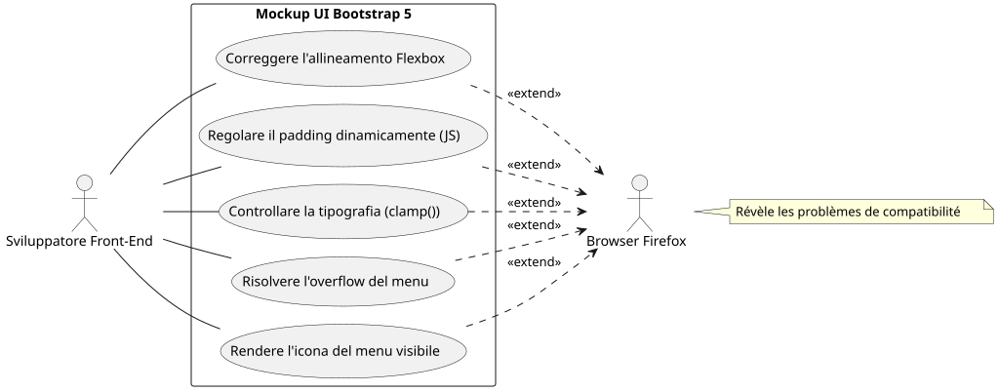
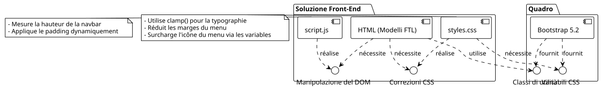
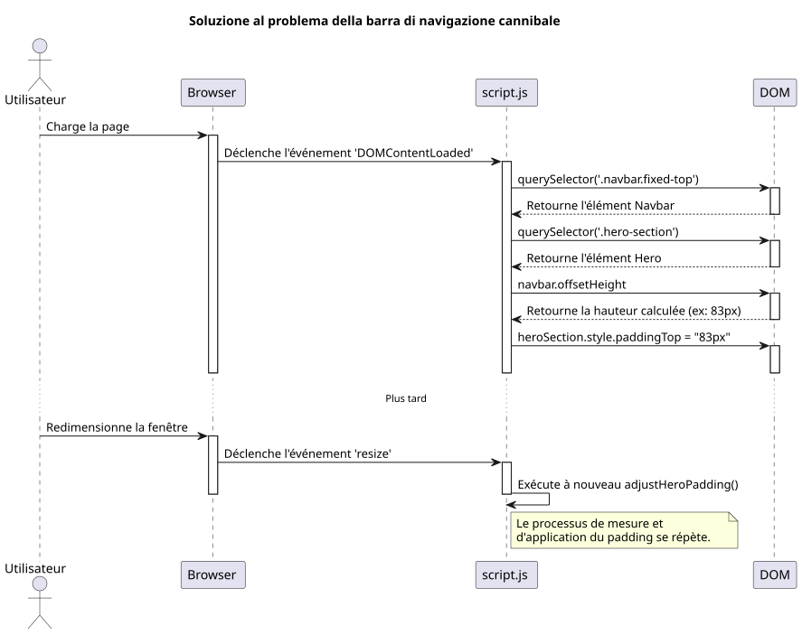
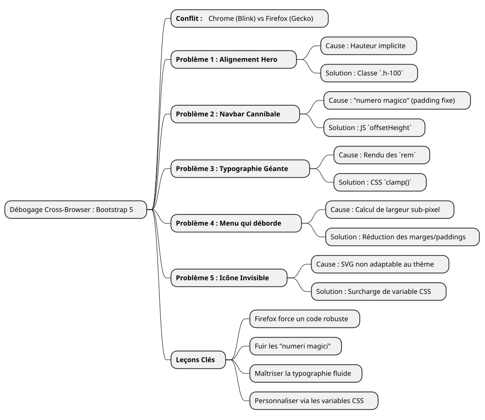

Resoconto di un debug : domare i capricci di Firefox con Bootstrap 5
Publié le 14 July 2025
- Il campo di battaglia: un mockup, tre browser, rendering multipli
- Problema 1 : La carta volante della sezione "Hero
- Problema 2 : La barra di navigazione cannibale
- Problema 3: La tipografia anarchica
- Problema 4: La barra di navigazione che deborda
- Problema 5 : Il menu hamburger invisibile
- Conclusion: le lezioni di un debug ostinato
|
Tempo di lettura : circa 7 minuti Livello : Intermedio |
In questo caso pratico dettagliato, analizzeremo i problemi di compatibilità con i browser più comuni e talvolta più frustranti incontrati durante la creazione di una maquetta UI con Bootstrap 5.2. Dalla gestione Flexbox alla sottigliezza del rendering dei caratteri, scopri il nostro percorso di debug per trasformare un design traballante su Firefox in un’esperienza pixel-perfect su tutti i browser.
Il campo di battaglia: un mockup, tre browser, rendering multipli
Ogni sviluppatore front-end conosce questa sensazione. Dopo ore di lavoro, la bozza è finalmente perfetta. Gli allineamenti sono netti, la tipografia è elegante, le animazioni sono fluide. Si tira un sospiro di soddisfazione, si ammira il proprio lavoro su Chrome (o Brave, o Edge), poi, per acquisito di coscienza, si apre il progetto su Firefox. Ed è qui che nasce il dramma. Elementi che fuoriescono, allineamenti rotti, caratteri con dimensioni caotiche… la bella armonia se ne è andata.
È precisamente lo scenario che abbiamo affrontato sviluppando una nuova interfaccia di portfolio. Le specifiche erano semplici: una homepage moderna, responsive, con un selettore di temi (chiaro, scuro e ad alto contrasto), utilizzando vanilla JavaScript e l’ultima versione di Bootstrap 5.2.
Questo articolo non è una lista di soluzioni miracolose. È il registro di bordo della nostra sessione di debug, un’approfondimento sul "perché" delle differenze di rendering tra i motori Blink (Chromium, Brave) e Gecko (Firefox), e la dimostrazione che soluzioni robuste e moderne valgono sempre meglio di toppe affrettate.
Diagramma dei casi d’uso: il processo di debug


Problema 1 : La carta volante della sezione "Hero
Il primo bug era anche il più visibile. La sezione di benvenuto ("hero") è composta da due colonne: a sinistra, il titolo principale; a destra, una carta di presentazione.
-
Il sintomo :Su Chrome e Brave, le due colonne erano perfettamente centrate verticalmente. Su Firefox, la carta di destra cadeva inspiegabilmente sotto il testo di sinistra.
-
L’investigazione :Il codice HTML sembrava però semplice e corretto, utilizzando le classi standard di Bootstrap.
<section id="home" class="hero-section">
<div class="container">
<!-- Cette ligne est la clé du problème -->
<div class="row align-items-center min-vh-100">
<div class="col-lg-6">
<!-- Contenu de gauche -->
</div>
<div class="col-lg-6">
<!-- Carte de droite -->
</div>
</div>
</div>
</section>Nostro CSS personalizzato per`.hero-section`definiva`display: flex` et align-items: center, e la classe`min-vh-100`dava effettivamente un’altezza minima alla riga (div.row). Allora, perché Firefox rifiutava di centrare le colonne?
-
La causa profonda :È un caso d’esempio sul modo in cui i motori di rendering interpretano le altezze implicite. La`<section>`aveva una`min-height`, ma nessun`height`esplicito. Per applicare`align-items-center`all’interno di`div.row`, Firefox ha bisogno di conoscere l’altezza di riferimento di questo contenitore. Come i suoi genitori (
div.containeret la `<section>`ella stessa) non avevano altezzastricta, Firefox era perso. Il motore Blink, più permissivo, riesce a "indovinare" l’intenzione e a centrare gli elementi. Gecko, più fedele alla specifica, non lo fa. -
La soluzione:Rendere l’altezza esplicita. Abbiamo forzato il`.container` et le `.row`occupare il 100% dell’altezza del loro rispettivo genitore utilizzando la classe di utilità`h-100`di Bootstrap.
<section id="home" class="hero-section">
<div class="container h-100">
<div class="row align-items-center min-vh-100 h-100">
<!-- ... -->
</div>
</div>
</section>|
Quando un`align-items`Flexbox non funziona come previsto sull’asse verticale, verifica sempre che il contenitore abbia un’altezza ( |
Problema 2 : La barra di navigazione cannibale
-
Il sintomo : Le `padding`era sufficiente su Chrome, ma non su Firefox, dove il titolo era sempre parzialmente mascherato.
-
La causa profonda :L’utilizzo di un "numero magico" (")
80px) è una pratica molto pessima. L’altezza di un elemento come una barra di navigazione può variare di pochi pixel da un browser all’altro a causa di differenze sottili nel rendering dei caratteri, degli spaziature, o persino delle impostazioni dell’utente. Fare affidamento su un valore fisso è la ricetta per un design fragile. -
La soluzione :Una soluzione dinamica e infallibile in JavaScript. Abbiamo scritto un piccolo script per :
-
Misurare l’altezza reale della barra di navigazione dopo il rendering della pagina.
-
Applicare questa altezza misurata come`padding-top`alla sezione "Hero".
-
Re-eseguire questa funzione ad ogni ridimensionamento della finestra per adattarsi alle modifiche (come il passaggio al menu hamburger).
document.addEventListener('DOMContentLoaded', function() {
function adjustHeroPadding() {
const navbar = document.querySelector('.navbar.fixed-top');
const heroSection = document.querySelector('.hero-section');
if (navbar && heroSection) {
const navbarHeight = navbar.offsetHeight;
heroSection.style.paddingTop = navbarHeight + 'px';
}
}
// Ajuster au chargement et au redimensionnement
adjustHeroPadding();
window.addEventListener('resize', adjustHeroPadding);
});
In parallelo, naturalmente abbiamo eliminato la regola`padding-top: 80px;`del nostro file`styles.css`.
Problema 3: La tipografia anarchica
-
Il sintomo :Su Firefox, il carattere del titolo "Développeur Formateur…" era enorme, quasi sconvolgente, mentre era armonioso sugli altri browser.
-
La causa profonda :Il titolo utilizzava una classe`display-4`di Bootstrap. Queste classi utilizzano dimensioni di carattere responsive, spesso basate sull’unità`rem`e delle media query. Ancora una volta, l’algoritmo di rendering di Firefox, combinato con il carattere "Inter", dava origine a un calcolo di dimensioni molto più grande sulla nostra risoluzione di 1920x1080.
-
La soluzione :Riprendere il controllo con la funzione CSS`clamp()
. Questa funzione è una rivoluzione per la tipografia fluida. Consente di definire una dimensione del carattere con tre valori: una dimensione minima, una dimensione "preferita" (che si adatta alla larghezza della vista,`vw), e una dimensione massima.
.hero-content h1 {
color: var(--text-primary);
line-height: 1.2;
/*
Min: 2rem
Préférée: s'adapte à la vue
Max: 2.5rem (40px)
*/
font-size: clamp(2rem, 1.2rem + 1.5vw, 2.5rem);
}Con`clamp(), noi abbiamo potuto dire al navigatore: "Fai ingrandire il carattere insieme allo schermo, ma non superaremaiil limite di`2.5rem. Questo ha istantaneamente armonizzato il rendering su tutti i browser, dandoci un controllo assoluto sull’aspetto finale.
Problema 4: La barra di navigazione che deborda
-
Il sintomo :Su uno schermo 1920x1080, gli ultimi collegamenti del menu (« Blog », « Contact ») venivano spinti fuori dallo schermo verso destra, ma solo su Firefox.
-
La causa profonda:Dopo diversi tentativi infruttuosi (cambiare i punti di interruzione di Bootstrap di`lg` à
xl`poi`xxl), abbiamo capito. La causa non era la logica di Bootstrap, ma un semplice calcolo di larghezza. Su Firefox, la somma delle larghezze di tutti i link, incluse le loro`padding` et `margin`A livello di subpixel, era leggermente superiore a 1920 pixel. Su Chrome, questa stessa somma era leggermente inferiore. Ci mancavano alcuni pixel. -
La soluzione:Una riduzione chirurgica degli spaziature. Dato che era fuori questione prendere di mira specificamente Firefox con gli obsoleti "hack" CSS, l’unica soluzione pulita era trovare uno stile comune che funzionasse ovunque. Abbiamo quindi leggermente ridotto i margini e il padding orizzontali di ogni link di navigazione.
/* La version finale, légèrement plus compacte */
.navbar-nav .nav-link {
font-size: 0.9rem; /* 90% de la taille de base */
color: var(--text-primary) !important;
font-weight: 500;
margin: 0 0.2rem;
padding: 0.5rem 0.5rem !important;
border-radius: 0.375rem;
transition: all 0.3s ease;
}Questa riduzione, quasi invisibile a occhio nudo su un solo elemento, ci ha fatto guadagnare collettivamente lo spazio necessario affinché tutti i link entrino nel riquadro su Firefox, mantenendo al contempo un aspetto quasi identico sugli altri browser.
Problema 5 : Il menu hamburger invisibile
-
Il sintomo:In modalità responsive (menu "hamburger"), l’icona del menu era invisibile sui temi "dark" e "high-contrast".
-
La causa profonda:L’icona del menu di Bootstrap 5 è un`background-image`(un SVG codificato in URL). Per impostazione predefinita, il colore del suo tratto è scuro, ottimizzato per uno sfondo chiaro. Non si adatta automaticamente al cambio di tema.
-
La soluzione :Utilizzare le variabili CSS di Bootstrap per sovrascrivere l’icona. Abbiamo definito una nuova icona SVG, ma questa volta con un tratto bianco (
#ffffff), e l’abbiamo applicata specificamente quando i temi`dark` ou `high-contrast`sono attivi.
/* ======================
Fix pour l'icône du menu Burger (Blanc)
====================== */
[data-bs-theme="dark"] .navbar-toggler-icon,
[data-bs-theme="high-contrast"] .navbar-toggler-icon {
--bs-navbar-toggler-icon-bg: url("data:image/svg+xml,%3csvg xmlns='http://www.w3.org/2000/svg' viewBox='0 0 30 30'%3e%3cpath stroke='%23ffffff' stroke-linecap='round' stroke-miterlimit='10' stroke-width='2' d='M4 7h22M4 15h22M4 23h22'/%3e%3c/svg%3e");
}|
La personalizzazione dei componenti di Bootstrap come questo viene effettuata sempre più spesso tramite la sovrascrittura delle variabili CSS ( |
Conclusion: le lezioni di un debug ostinato
Questo percorso, sebbene a volte frustrante, è ricco di insegnamenti. Ogni problema risolto rafforza una verità fondamentale dello sviluppo web:Nulla sostituisce un test multi-browser rigoroso.

-
Firefox è un alleato:La sua massima fedeltà agli standard CSS ci costringe a scrivere un codice più robusto e meno ambiguo.
-
Fuggite i "numeri magici":I valori fissi (come`padding-top: 80px`) sono bombe a orologeria. Preferite sempre soluzioni dinamiche (JavaScript) o relative (Flexbox, Grid).
-
Padroneggia la tua tipografia :Utilizzate`clamp()`per un controllo totale sulla dimensione dei caratteri responsive.
-
Pensa in "componenti":Per personalizzare Bootstrap, sovrascrivi le sue variabili CSS anziché moltiplicare le regole che sovrascrivono il framework.
-
Non puntare a un browser:La soluzione quasi mai consiste nel fare un "hack" per un browser specifico, ma nel trovare uno stile comune che funzioni ovunque.
Alla fine, la maquetta è ormai stabile, prevedibile e pronta per essere incorporata in un sistema di templating. Ogni bug corretto non era un insuccesso, ma un passo verso un codice di migliore qualità.
Articoli correlati
14 May 2026